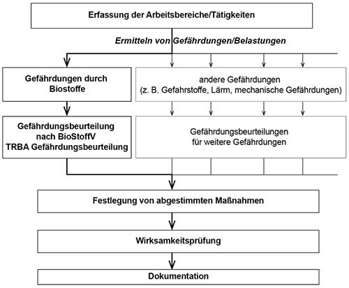
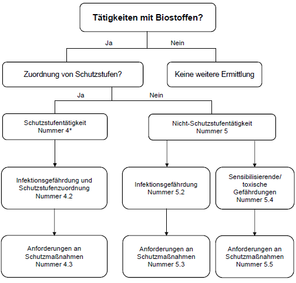

(1) Von Biostoffen können infektiöse, sensibilisierende und toxische Wirkungen ausgehen. Diese Wirkungen von Biostoffen können gemeinsam auftreten. Sonstige, die Gesundheit schädigende Wirkungen können als Folge von Infektionen oder toxischen Wirkungen von Biostoffen auftreten. Darunter werden krebserzeugende oder fruchtschädigende / fruchtbarkeitsgefährdende Wirkungen verstanden. Nähere Informationen zu den möglichen Gesundheitsgefährdungen sind in Anlage 1 zusammengefasst.
(2) Bei der Gefährdungsbeurteilung sind die von der Tätigkeit mit Biostoffen ausgehenden Gefährdungen zu beurteilen. Vorerkrankungen oder andere individuelle Veranlagungen, die zu einer erhöhten Gefährdung der betroffenen Beschäftigten durch Biostoffe führen können, sind im Rahmen der arbeitsmedizinischen Prävention zu berücksichtigen.
(1) Der Arbeitgeber ist verpflichtet nach § 5 Arbeitsschutzgesetz die Arbeitsbedingungen seiner Beschäftigten daraufhin zu beurteilen, ob deren Gesundheit oder Sicherheit gefährdet ist. Ziel dieser Gefährdungsbeurteilung ist es zu ermitteln, welche Schutzmaßnahmen getroffen werden müssen, um Gesundheitsgefährdungen bei Beschäftigten zu verhindern.
(2) Am Arbeitsplatz können gleichzeitig unterschiedliche Belastungen oder Gefährdungen bestehen. Diese sind zunächst getrennt zu erfassen und zu beurteilen und anschließend in einer gesamten Gefährdungsbeurteilung zusammenzuführen. Die Schutzmaßnahmen sind aufeinander abzustimmen und müssen alle Gefährdungen berücksichtigen (siehe Abbildung 1). Das methodische Vorgehen bei der Gefährdungsbeurteilung umfasst folgende Schritte:

(3) Werden Beschäftigte mehrerer Arbeitgeber an einem Arbeitsplatz tätig oder werden bestimmte Tätigkeiten im Betrieb an Fremdfirmen vergeben, sind die jeweiligen Arbeitgeber nach § 8 ArbSchG verpflichtet, bei der Durchführung der Sicherheits- und Arbeitsschutzbestimmungen zusammenzuarbeiten. Eine gegenseitige Information über die mit den Arbeiten verbundenen Gefahren für Sicherheit und Gesundheit der Beschäftigten ist erforderlich. Ggf. ist die Gefährdungsbeurteilung gemeinsam durchzuführen und die Durchführung von Schutzmaßnahmen abzustimmen.
Der Arbeitgeber muss sich je nach Art der Tätigkeit vergewissern, dass die Beschäftigten anderer Arbeitgeber hinsichtlich der Gefahren für ihre Sicherheit und Gesundheit angemessene Anweisungen erhalten haben.
(4) Liegt ein Fall der Arbeitnehmerüberlassung vor, ist zur betriebsspezifischen Unterweisung der Entleiher verpflichtet. Hierbei sind die Erfahrungen und Qualifikationen der Personen, die ihm zur Arbeitsleistung überlassen worden sind, zu berücksichtigen.
(1) Die Gefährdungsbeurteilung nach der Biostoffverordnung muss fachkundig erfolgen. Verfügt der Arbeitgeber nicht selbst über die entsprechenden Kenntnisse, hat er sich fachkundig beraten zu lassen. Regelungen zur erforderlichen Fachkunde enthält die TRBA 200 „Anforderungen an die Fachkunde nach Biostoffverordnung“.
(2) Nach § 4 Absatz 2 BioStoffV ist die Gefährdungsbeurteilung mindestens jedes zweite Jahr zu überprüfen, bei Bedarf zu aktualisieren und das Ergebnis zu dokumentieren. Aktualisierungsanlässe sind:
(3) Für vergleichbare Tätigkeiten und Expositionsbedingungen (z.B. mehrere gleichartige Arbeitsplätze) kann der Arbeitgeber eine gemeinsame Gefährdungsbeurteilung durchführen. Tätigkeiten, die mit einer hohen Gefährdung verknüpft sind, wie Tätigkeiten der Schutzstufen 3 und 4, sollten jedoch nicht pauschal, sondern einzeln beurteilt werden. Dies gilt auch für Tätigkeiten, die nicht regelmäßig durchgeführt werden wie z.B. Wartungs-, Reparatur- oder Instandhaltungsarbeiten.
(4) Voraussetzung für eine sachgerechte und vollständige Beurteilung der Gefährdungen sowie für die Festlegung der erforderlichen Schutzmaßnahmen ist die Ermittlung
(5) Die ermittelten Informationen zur Infektionsgefährdung und den Gefährdungen durch sensibilisierende oder toxische Wirkungen sind unabhängig voneinander zu beurteilen. Diese Einzelbeurteilungen sind zu einer Gesamtbeurteilung zusammenzufassen.
(6) Bei der Informationsbeschaffung sind die tätigkeitsrelevanten betriebseigenen Erfahrungen einschließlich der Kenntnisse und Fähigkeiten der Beschäftigten sowie die entsprechenden betrieblichen Unterlagen, wie z.B. Berichte aus den betrieblichen Arbeitsschutzausschuss-Sitzungen, Unfallmeldungen, Erkenntnisse über arbeitsbedingte Erkrankungen und ggf. vorliegende innerbetriebliche Unterlagen zu Messungen heranzuziehen.
(1) Bei Tätigkeiten mit Biostoffen wird unterschieden zwischen Tätigkeiten mit oder ohne Schutzstufenzuordnung.
Tätigkeiten mit Biostoffen in Laboratorien, in Versuchstierhaltungen, in der Biotechnologie und in Einrichtungen des Gesundheitsdienstes sind einer Schutzstufe zuzuordnen (im Weiteren Schutzstufentätigkeiten genannt). Alle anderen Tätigkeiten mit Biostoffen brauchen keiner Schutzstufe zugeordnet zu werden (im Weiteren Nicht-Schutzstufentätigkeiten genannt).
(2) Bei Schutzstufentätigkeiten sind die vorkommenden oder eingesetzten Biostoffe in der Regel bekannt oder zumindest hinreichend bestimmbar. Dies ist bei Nicht-Schutzstufentätigkeiten überwiegend nicht gegeben; deshalb ist eine umfassende Informationsbeschaffung insbesondere zur Identität der Biostoffe nicht immer möglich, zum Beispiel in Kläranlagen und in der Abfallentsorgung. Aufgrund dieser Unterschiede ist die Herangehensweise an die Gefährdungsbeurteilung verschieden. Schutzstufentätigkeiten und Nicht-Schutzstufentätigkeiten werden deshalb in dieser TRBA getrennt geregelt (siehe Abbildung 2).

*Sensibilisierende/toxische Gefährdungen siehe Nummer 4 Absatz 3 und Anforderungen an Schutzmaßnahmen siehe Nummer 4.3 Absatz 3
(1) Die Schutzmaßnahmen sind entsprechend dem Ergebnis der Gefährdungsbeurteilung mit dem Ziel festzulegen und umzusetzen, eine Exposition der Beschäftigten zu verhindern oder, sofern dies nicht möglich ist, zu minimieren. Dies hat unter den Gesichtspunkten der Erforderlichkeit, Eignung und Angemessenheit entsprechend folgender Rangfolge zu geschehen:
(2) Bei der Festlegung der Schutzmaßnahmen sind der Stand der Technik sowie gesicherte arbeitswissenschaftliche Erkenntnisse zu berücksichtigen.
(3) Grundsätzlich sind bei allen Tätigkeiten mit Biostoffen die Hygienemaßnahmen entsprechend § 9 Absatz 1 oder 2 der Biostoffverordnung festzulegen und zu treffen. Weitere Maßnahmen sind bei Tätigkeiten mit Biostoffen der Risikogruppe 1 ohne sensibilisierende, toxische oder sonstige, die Gesundheit schädigende Wirkungen nicht erforderlich.
(4) Bereits bestehende Schutzmaßnahmen sind daraufhin zu prüfen, ob sie den in der Gefährdungsbeurteilung ermittelten Anforderungen entsprechen und sind ggf. anzupassen. Dies umfasst auch Schutzmaßnahmen, die auf Grund anderer Rechtsvorschriften (z.B. Gefahrstoffverordnung) getroffen wurden (siehe auch Abbildung 1).
(5) Es ist zu prüfen, ob Maßnahmen der arbeitsmedizinischen Vorsorge zu treffen sind.
(6) Die erforderlichen Schutzmaßnahmen, die für die jeweilige Wirkung (infektiös, sensibilisierend, toxisch) eines Biostoffs ausgewählt wurden, müssen im Rahmen einer Gesamtbeurteilung auf einander abgestimmt werden (siehe Nummer 7).
(7) Psychische Belastungen können in einem Zusammenhang mit dem Gefährdungspotenzial von Biostoffen stehen, z.B. bei Tätigkeiten mit hochpathogenen Erregern. Weiterhin können psychische Belastungen das Risiko von Unfällen, wie Nadelstichverletzungen erhöhen. Darüber hinaus können psychische Belastungen die individuelle Immunabwehr beeinflussen. Deshalb sind auch solche Belastungen zu minimieren.